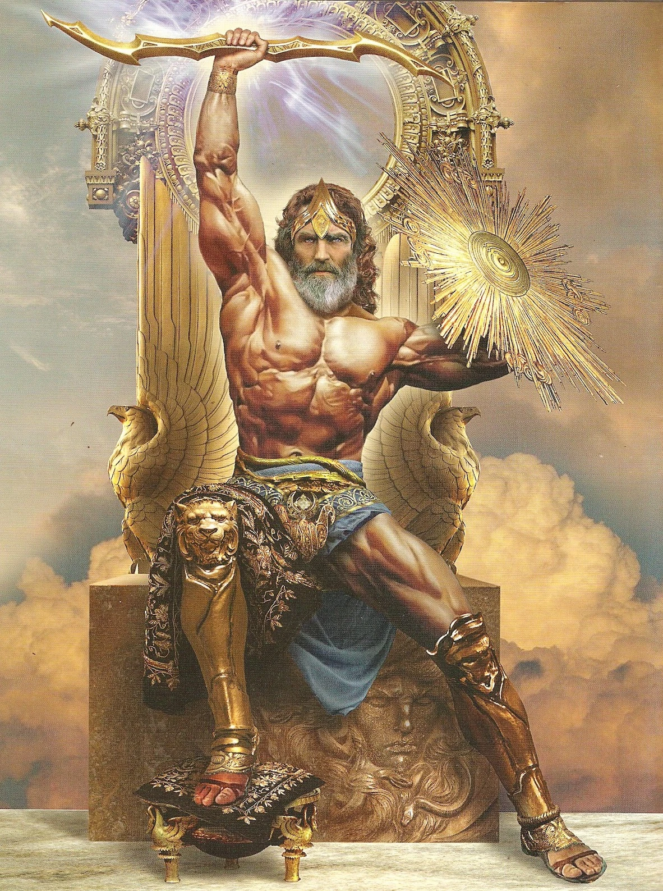

O Início dos Três Grandes do Olimpo Muito antes dos deuses do Olimpo reinarem sobre o mundo, o caos dominava o universo. Do caos, surgiu Gaia, a Mãe Terra, e Urano, o Céu estrelado. Dessa união nasceram os Titãs, entre eles Cronos. Temendo ser destronado por seus próprios filhos, assim como ele fizera com Urano, Cronos engolia cada um deles assim que nasciam. Réia, sua esposa, cansada de ver seus filhos desaparecerem, decidiu salvar o último: Zeus. Em segredo, ela deu à luz Zeus em uma caverna na ilha de Creta e entregou a Cronos uma pedra enrolada em panos. Zeus cresceu em segurança, alimentado por leite da cabra Amalteia. Quando adulto, com a ajuda da deusa Métis, deu a Cronos uma poção que o fez vomitar seus irmãos: Héstia, Deméter, Hera, Hades e Poseidon. Unidos, os filhos de Cronos travaram uma guerra contra os Titãs, conhecida como a Titanomaquia. Durante dez anos, o céu tremeu com a batalha entre as duas gerações de deuses. Com o apoio dos Ciclopes e dos Hecatônquiros, libertos por Zeus do Tártaro, os deuses olímpicos venceram. Como recompensa, os Ciclopes presentearam Zeus com os raios, Poseidon com o tridente e Hades com o elmo da invisibilidade. Após a vitória, os três irmãos dividiram entre si o mundo: Zeus ficou com o céu, Poseidon com os mares, e Hades com o mundo dos mortos. Assim, nascia a era dos deuses olímpicos, e os três grandes passaram a governar seus domínios com poder absoluto, moldando o destino dos mortais e dos próprios deuses.
